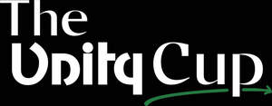

Trade Mark Journal No.2025/020 16 May 2025
UK00004184749 5 April 2025 (16,25,35,38,41)

- Class 16
- Event programs; Souvenir event programs; Printed event admission tickets; Events programmes.
- Class 25
- Sportswear; Clothing for sports; Sports clothing; Sports garments; Leisure clothing; Footwear for sports; Sports footwear.
- Class 35
- Event marketing; Promotion of special events; Arranging promotion of charitable fundraising events; Promotion of sports competitions and events; Promotion services relating to esports events; Arranging and conducting of promotional events; Conducting of commercial events; Promotion of goods and services through sponsorship of sports events; Organization of events, exhibitions, fairs and shows for commercial, promotional and advertising purposes.
- Class 38
- Broadcasting of esports events; Streaming of esports events.
- Class 41
- Sporting event organization; Special event planning; Special event planning consultation; Organization of sporting events; Organising of sporting events; Organising sporting events; Organisation of sporting events; Organization of entertainment events; Organization of sporting events and competitions; Presentation of live entertainment events; Organising community sporting events; Organisation of entertainment events; Ticketing and event booking services; Dance events; Organisation of sporting events and competitions; Provision of sporting events; Production of sporting events; Arranging of sporting events; Organisation of cultural events; Organisation of esports events; Ticket information services for sporting events; Timing of sports events; Organising dancing events; Organising of sports events; Organisation of musical events; Organisation of vehicle racing events; Organizing community sporting and cultural events; Organising of recreational events; Organising community cultural events; Organisation of cycling events; Organisation of entertainment and cultural events; Organising of sporting events, competitions and sporting tournaments; Entertainment provided during intervals of sporting events; Ticket reservation for cultural events; Organising of football events; Organisation of automobile racing events; Organising of sports competitions and events; Provision and management of sporting events; Ticket reservation and booking services for sporting events; Conducting of entertainment events; Organising events for cultural purposes; Ticket information services for esports events; Production of esports events; Ticket procurement services for sporting events; Organisation of sporting competitions and sports events; Organisation of events for cultural, entertainment and sporting purposes; Organization of events for cultural purposes; Ticket information services for entertainment events; Arranging for ticket reservations for shows and other entertainment events; Production of sporting events for radio; Conducting of cultural events; Entertainment services in the nature of sporting events; Booking of seats for entertainment events; Production of live entertainment events; Ticket reservation and booking services for esports events; Services for the organisation of sports events; Production of sporting events for television; Management of events for sporting clubs; Conducting of live esports events; Entertainment services relating to sporting events; Services for the organisation of football events; Provision of information relating to sporting events; Conducting of sports events; Ticket reservation and booking services for entertainment events; Ticket reservation and booking services for cultural events; Entertainment services provided during intervals at sports events; Booking of sports personalities for events (services of a promoter); Conducting of live sports events; Booking of seats for shows and sports events; Booking of performing artists for events (services of a promoter); Provision of recreational events; Organising of sports competitions and sports events; Organising of sports events and of sports competitions; Organising of sports and sports events; Arranging and conducting of entertainment events for charitable fundraising purposes; Entertainment services in the nature of organizing social entertainment events.
Unity Cup Ltd